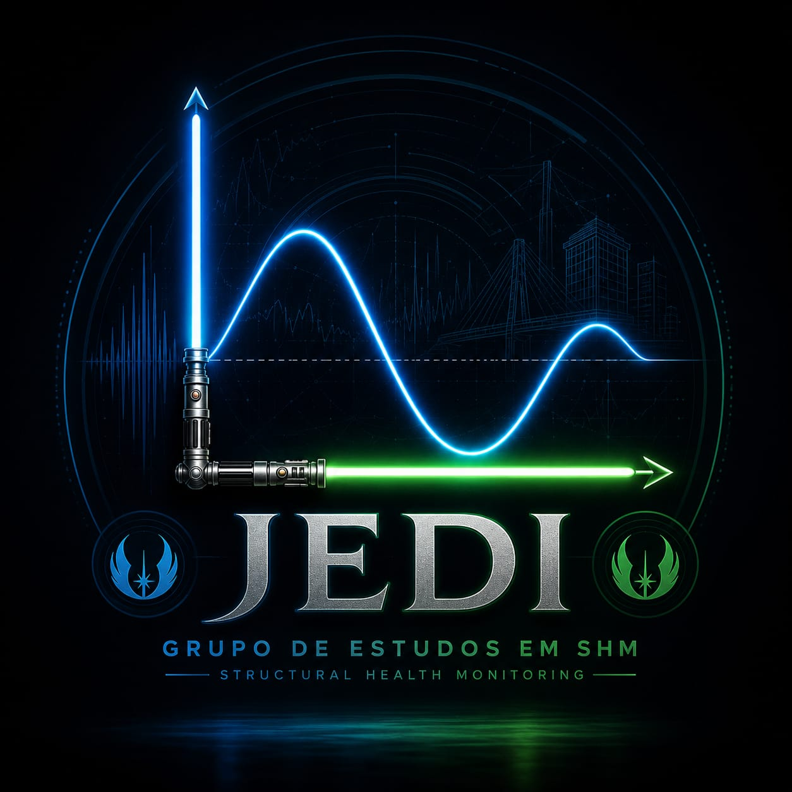

JEDI
Monitoramento Estrutural
Plataforma de análise em tempo real · Visualização 3D & Análise Espectral
🏗️ Estrutura (3D)
📊 Gráficos
MODO TEMPO REAL
🏗️ Visualizador Estrutural Interativo
Rotacione com o mouse · Zoom na roda · Troque o campo
Resultado:
Tensão (von Mises)
Deslocamento (Deformada)
Escala da Deformada:
50x
Visualizador
Arraste para rotacionar · Roda para zoom
von Mises (MPa)
-
-
-
-
-
-
Carregando visualizador 3D…
📊 Monitoramento — Aceleração & FFT (4 Placas)
Sincronização automática com a planilha
Modo:
Tempo Real (últimas 24 h)
Histórico (escolher período)
Completo (todos os dados)
Resetar Zoom
Intervalo:
10 segundos
30 segundos
1 minuto
5 minutos
10 minutos
30 minutos
1 hora
Sincronizar
Pronto
Início:
Fim:
Aplicar Filtro
Faixa de frequência (FFT):
Todas as frequências
4,0535 Hz – 4,0566 Hz
38,42 Hz – 41,21 Hz
Fonte: verificando…
📌 Extremos da aceleração resultante
√(X² + Y² + Z²) no período exibido · duração = até a leitura seguinte mudar de valor